3 Gradient boosting
Les algorithmes de gradient boosting permettent de minimiser des pertes empiriques de la forme \[\frac{1}{n}\sum_{i=1}^n\ell(y_i,f(x_i)).\] où \(\ell:\mathbb R\times\mathbb R\to\mathbb R\) est une fonction de coût convexe en son second argument. Il existe plusieurs type d’algorithmes boosting. Un des plus connus et utilisés a été proposé par Friedman (2001), c’est la version que nous étudions dans cette partie.
Cette approche propose de chercher la meilleure combinaison linéaire d’arbres binaires, c’est-à-dire que l’on recherche \(g(x)=\sum_{m=1}^M\alpha_mh_m(x)\) qui minimise \[\mathcal R_n(g)=\frac{1}{n}\sum_{i=1}^n\ell(y_i,g(x_i)).\] Optimiser sur toutes les combinaisons d’arbres binaires se révélant souvent trop compliqué, Friedman (2001) utilise une descente de gradient pour construire la combinaison d’arbres de façon récursive. L’algorithme est le suivant :
Entrées :
- \(d_n=(x_1,y_1),\dots,(x_n,y_n)\) l’échantillon, \(\lambda\) un paramètre de régularisation tel que \(0\lt\lambda\leq 1\).
- \(M\in\mathbb N\) le nombre d’itérations.
- paramètres de l’arbre (nombre de coupures…)
Itérations :
- Initialisation : \(g_0(.)=\mathop{\mathrm{argmin}}_c \frac{1}{n}\sum_{i=1}^n \ell(y_i,c)\)
- Pour \(m=1\) à \(M\) :
- Calculer l’opposé du gradient \(-\frac{\partial}{\partial g(x_i)}\ell(y_i,g(x_i))\) et l’évaluer aux points \(g_{m-1}(x_i)\) : \[U_i=-\frac{\partial}{\partial g(x_i)}\ell(y_i,g(x_i)) _{\Big |g(x_i)=g_{m-1}(x_i)},\quad i=1,\dots,n.\]
- Ajuster un arbre sur l’échantillon \((x_1,U_1),\dots,(x_n,U_n)\), on le note \(h_m\).
- Mise à jour : \(g_m(x)=g_{m-1}(x)+\lambda h_m(x)\).
Sortie : la suite \((g_m(x))_m\).
Sur R On peut utiliser différents packages pour faire du gradient boosting. Nous utilisons ici le package gbm (Ridgeway 2006).
3.1 Un exemple simple en régression
On considère un jeu de données \((x_i,y_i),i=1,\dots,200\) issu d’un modèle de régression \[y_i=m(x_i)+\varepsilon_i\] où la vraie fonction de régression est la fonction sinus (mais on va faire comme si on ne le savait pas).
x <- seq(-2*pi,2*pi,by=0.01)
y <- sin(x)
set.seed(1234)
X <- runif(200,-2*pi,2*pi)
Y <- sin(X)+rnorm(200,sd=0.2)
df1 <- data.frame(X,Y)
df2 <- data.frame(X=x,Y=y)
p1 <- ggplot(df1)+aes(x=X,y=Y)+geom_point()+
geom_line(data=df2,linewidth=1)+xlab("")+ylab("")
p1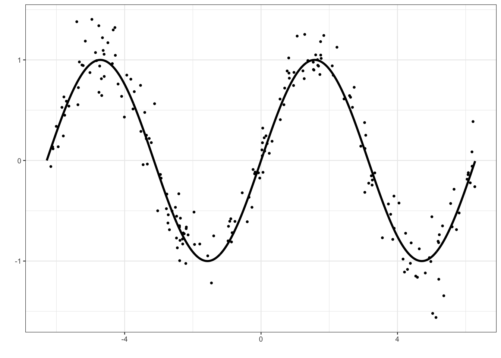
Rappeler ce que siginifie le \(L_2\)-boosting.
Il s’agit de l’algorithme de gradient boosting présenté ci-dessus appliqué à la fonction de perte \[\ell(y,f(x))=\frac{1}{2}(y-f(x))^2.\]
A l’aide de la fonction gbm du package gbm construire un algorithme de \(L_2\)-boosting. On utilisera 500000 itérations et gardera les autres valeurs par défaut de paramètres, à l’exception de
bag.fractionqu’on prendra égal à 1.library(gbm) L2boost <- gbm(Y~.,data=df1,n.trees = 500000, distribution="gaussian",bag.fraction = 1)Visualiser l’estimateur à la première itération. On pourra faire un predict avec l’option
n.treesou utiliser directement la fonction plot.gbm avec l’optionn.trees.prev1 <- predict(L2boost,newdata=df2,n.trees=1) df3 <- df2 |> rename(vraie=Y) |> mutate(`M=1`=prev1) df4 <- df3 |> pivot_longer(-X,names_to="courbes",values_to="prev") ggplot(df4)+aes(x=X,y=prev,color=courbes)+geom_line(size=1)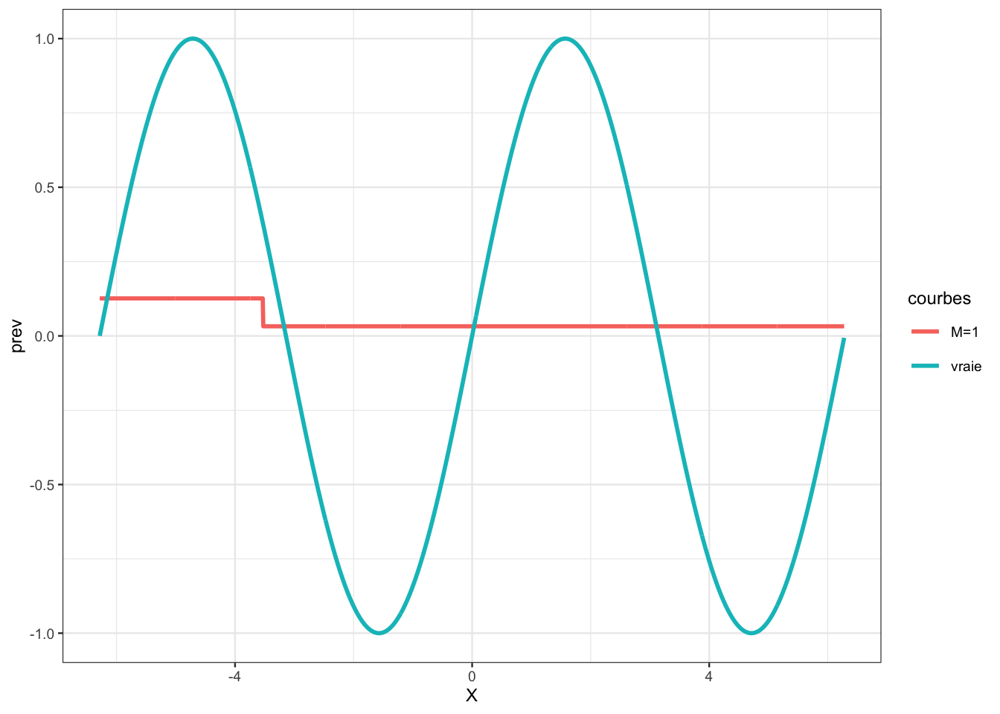
On remarque que l’estimateur est un arbre avec une seule coupure. On aurait aussi pu utiliser :
plot(L2boost,n.trees=1)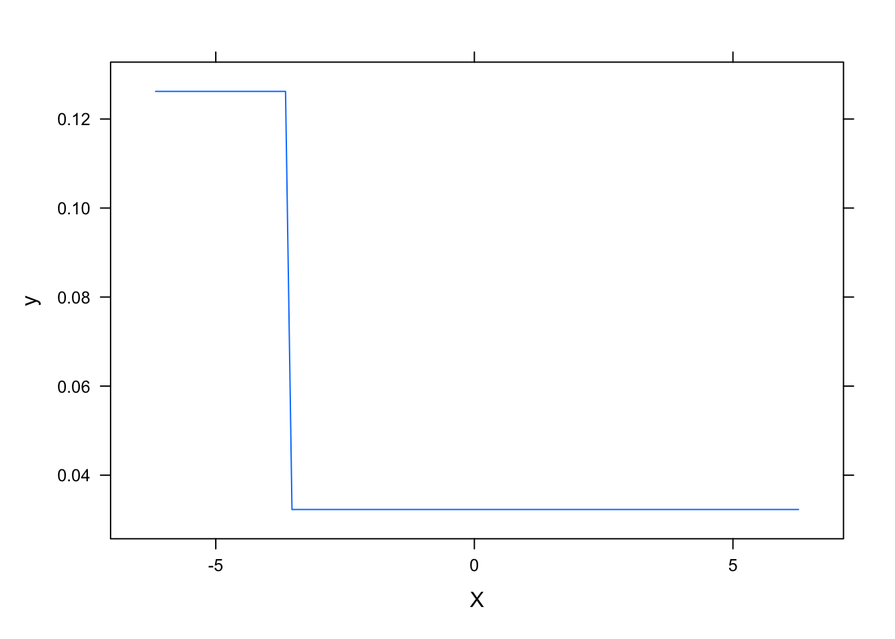
Faire de même pour les itérations 1000 et 500000.
prev1000 <- predict(L2boost,newdata=df2,n.trees=1000) prev500000 <- predict(L2boost,newdata=df2,n.trees=500000) df31 <- df3 |> mutate(`M=1000`=prev1000,`M=500000`=prev500000) df41 <- df31 |> pivot_longer(-X,names_to="courbes",values_to="prev") ggplot(df41)+aes(x=X,y=prev,color=courbes)+geom_line(size=1)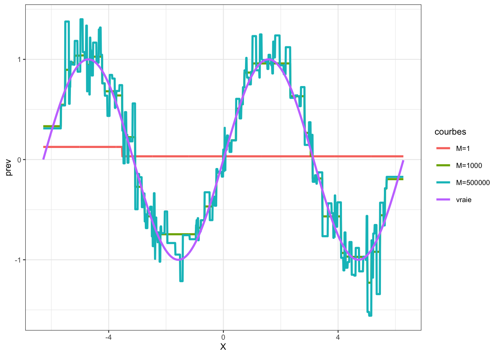
On sur-ajuste lorsque le nombre d’itérations est trop important.
Sélectionner le nombre d’itérations par la procédure de votre choix.
On propose de faire une validation hold out. C’est assez facile avec gbm il suffit de renseigner l’option
train.fractionde gbm.#parallel:::setDefaultClusterOptions(setup_strategy = "sequential") L2boost.sel <- gbm(Y~.,data=df1,n.trees = 10000,distribution="gaussian", bag.fraction = 1,train.fraction=0.75) iter_opt <- gbm.perf(L2boost.sel)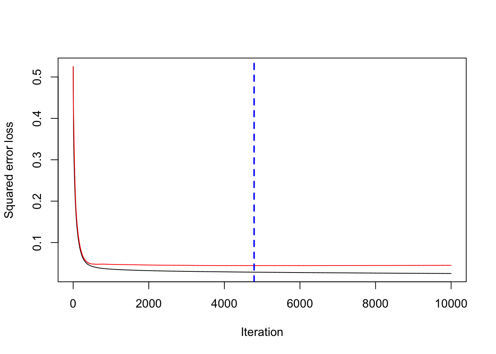
Représenter l’estimateur sélectionné.
prev_opt <- predict(L2boost.sel,newdata=df2,n.trees=iter_opt) df5 <- df2 |> rename(vraie=Y) |> mutate(Mopt=prev_opt) df51 <- df5 |> pivot_longer(-X,names_to="courbes",values_to="prev") ggplot(df51)+aes(x=X,y=prev,color=courbes)+geom_line(size=1)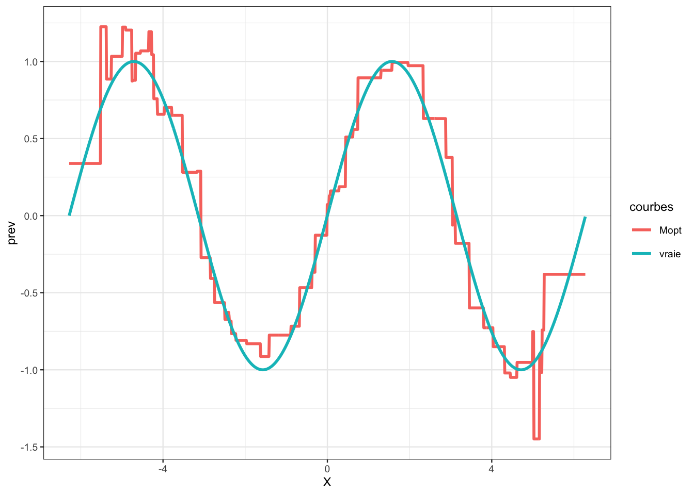
3.2 Adaboost et logitboost pour la classification binaire.
On considère le jeu de données spam du package kernlab.
library(kernlab)
data(spam)
set.seed(1234)
spam <- spam[sample(nrow(spam)),]Exécuter la commande et commenter la sortie.
model_ada1 <- gbm(type~.,data=spam,distribution="adaboost", interaction.depth=2, shrinkage=0.05,n.trees=500)On obtient le message d’erreur suivant :
model_ada1 <- gbm(type~.,data=spam,distribution="adaboost", interaction.depth=2, shrinkage=0.05,n.trees=500)Error in gbm.fit(x = x, y = y, offset = offset, distribution = distribution, : This version of AdaBoost requires the response to be in {0,1}Proposer une correction permettant de faire fonctionner l’algorithme.
Il est nécessaire que la variable qualitative à expliquer soit codée 0-1 pour adaboost.
spam1 <- spam spam1$type <- as.numeric(spam1$type)-1 set.seed(1234) model_ada1 <- gbm(type~.,data=spam1,distribution="adaboost", interaction.depth=2, shrinkage=0.05,n.trees=500)Expliciter le modèle ajusté par la commande précédente.
L’algorithme gbm est une descente de gradient qui minimise la fonction de perte \[\frac{1}{n}\sum_{i=1}^n \ell(y_i,g(x_i)).\] Dans le cas de adaboost on utilise la perte exponentielle : \(\ell(y,g(x))=\exp(-yg(x))\).
Effectuer un summary du modèle ajusté. Expliquer la sortie.
summary(model_ada1)
var rel.inf charExclamation charExclamation 20.04035224 charDollar charDollar 17.51535261 remove remove 11.51692621 free free 7.49397637 hp hp 6.25654932 capitalLong capitalLong 5.42905223 capitalAve capitalAve 4.69521299 your your 4.23371585 george george 2.50300727 edu edu 2.19692796 our our 1.99655393 money money 1.79063219 email email 1.51773292 capitalTotal capitalTotal 1.43872496 internet internet 1.12579132 receive receive 0.97001932 will will 0.94015881 you you 0.89915372 business business 0.84418397 re re 0.82959153 num1999 num1999 0.80016393 num650 num650 0.79468746 meeting meeting 0.69494729 num000 num000 0.56448978 charRoundbracket charRoundbracket 0.39921437 report report 0.38621968 charSemicolon charSemicolon 0.29835251 credit credit 0.27841575 over over 0.27064075 order order 0.26017226 mail mail 0.22398163 technology technology 0.10340435 hpl hpl 0.10151723 original original 0.09615196 font font 0.09539134 make make 0.08995855 project project 0.07970985 all all 0.05392468 people people 0.05359692 address address 0.04690996 parts parts 0.04260362 conference conference 0.02037549 num85 num85 0.01155488 num3d num3d 0.00000000 addresses addresses 0.00000000 lab lab 0.00000000 labs labs 0.00000000 telnet telnet 0.00000000 num857 num857 0.00000000 data data 0.00000000 num415 num415 0.00000000 pm pm 0.00000000 direct direct 0.00000000 cs cs 0.00000000 table table 0.00000000 charSquarebracket charSquarebracket 0.00000000 charHash charHash 0.00000000On obtient un indicateur qui permet de mesurer l’importance des variable dans la construction de la méthode.
Utiliser la fonction vip du package vip pour retrouver ce sorties.
library(vip) vip(model_ada1,num_features = 20L)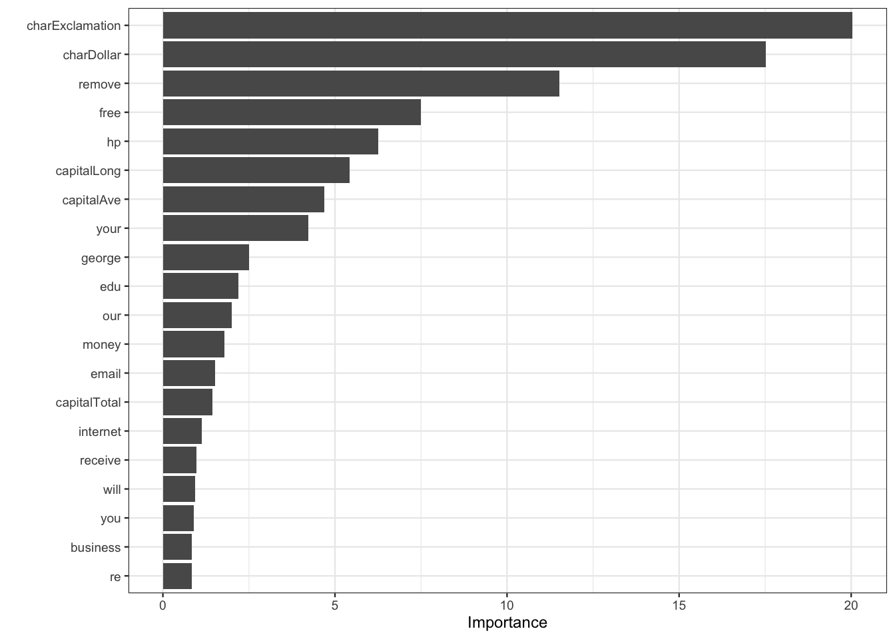
Sélectionner le nombre d’itérations pour l’algorithme adaboost en faisant une validation croisée 5 blocs.
model_ada2 <- gbm(type~.,data=spam1,distribution="adaboost", interaction.depth=2,bag.fraction=1, cv.folds = 5,n.trees=500) gbm.perf(model_ada2)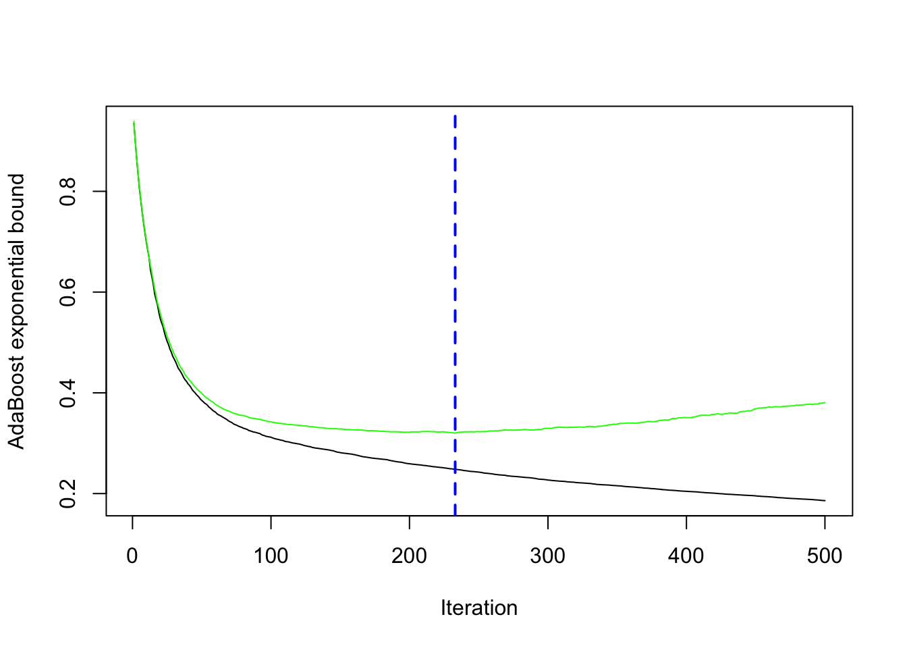
[1] 233Pour l’estimateur sélectionné, calculer la prévision (label et probabilité d’être un spam) de l’individu suivant :
xnew <- spam[1000,-58]On obtient la probabilité d’être spam avec
predict(model_ada2,newdata=xnew,type="response")[1] 0.0007065154On prédira donc
nonspam.Faire la même procédure en changeant la valeur du paramètre shrinkage (par exemple 0.05 et 0.5). Interpréter.
model_ada3 <- gbm(type~.,data=spam1,distribution="adaboost", interaction.depth=2,bag.fraction=1, cv.folds = 5,n.trees=500,shrinkage=0.05) gbm.perf(model_ada3)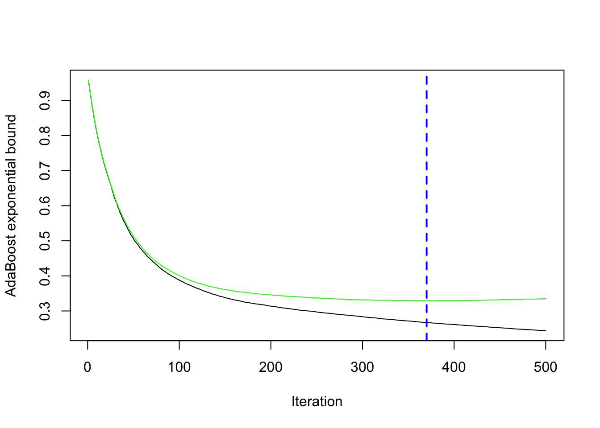
[1] 370model_ada4 <- gbm(type~.,data=spam1,distribution="adaboost", interaction.depth=2,bag.fraction=1, cv.folds = 5,n.trees=500,shrinkage=0.5) gbm.perf(model_ada4)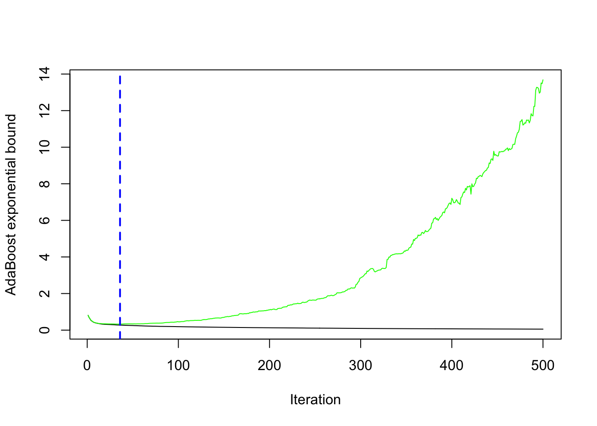
[1] 36Le nombre d’itérations optimal augmente lorsque shrinkage diminue. C’est logique car ce dernier paramètre contrôle la vitesse de descente de gradient : plus il est grand, plus on minimise vite et moins on itère. Il faut néanmoins veiller à ne pas le prendre trop petit pour avoir un estimateur stable. Ici, 0.05 semble être une bonne valeur.
Expliquer la différence entre adaboost et logitboost et précisez comment on peut mettre en œuvre ce dernier algorithme.
La seule différence se situe au niveau de la fonction de perte, adaboost utilise \[\exp(-yg(x))\] tandis que logitboost utilise \[\log(1+\exp(-2yg(x)))\] Avec gbm il faudra utiliser l’option
distribution="bernoulli"pour faire du logitboost, par exemple :set.seed(4321) logitboost <- gbm(type~.,data=spam1,distribution="bernoulli", interaction.depth=2, bag.fraction=1,cv.folds = 5, n.trees=500,shrinkage=0.4) gbm.perf(logitboost)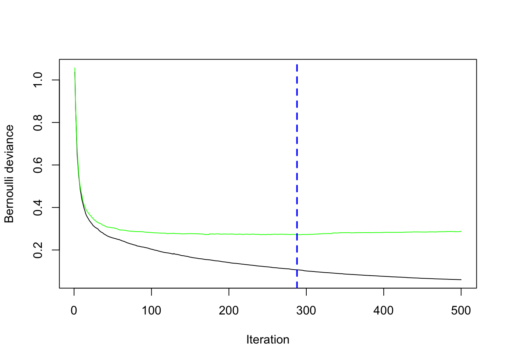
[1] 288
3.3 Comparaison de méthodes
On reprend les données spam de l’exercice précédent et on les coupe en un échantillon d’apprentissage pour entraîner les algorithmes et un échantillon test pour les comparer :
set.seed(1234)
perm <- sample(1:nrow(spam))
app <- spam[perm[1:3000],]
test <- spam[-perm[1:3000],]Sur les données d’apprentissage uniquement, entraîner
l’algorithme adaboost en sélectionnant le nombre d’itérations par validation croisée
l’algorithme logitboost en sélectionnant le nombre d’itérations par validation croisée
une forêt aléatoire avec les paramètres par défaut
un arbre CART
set.seed(4321) app1 <- app |> mutate(type=as.numeric(type)-1) model_ada <- gbm(type~.,data=app1,distribution="adaboost", interaction.depth=3,bag.fraction=1, shrinkage = 0.05, cv.folds = 5,n.trees=500) nb_ada <- gbm.perf(model_ada)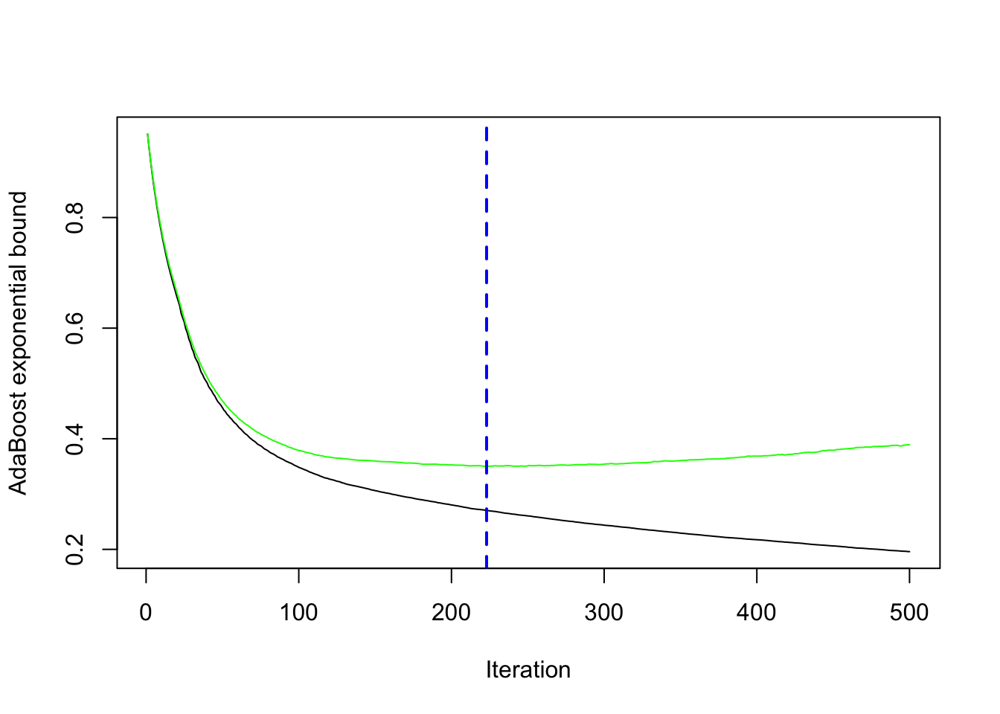
set.seed(5432) model_logit <- gbm(type~.,data=app1,distribution="bernoulli", interaction.depth=3,bag.fraction=1, cv.folds = 5,n.trees=800) nb_logit <- gbm.perf(model_logit)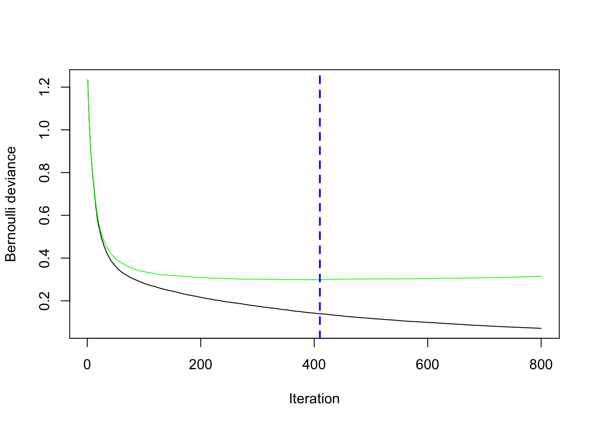
library(ranger) foret <- ranger(type~.,data=app,probability=TRUE) library(rpart) arbre <- rpart(type~.,data=app,cp=1e-8,minsplit=2) cp_opt <- arbre$cptable |> as.data.frame() |> filter(xerror==min(xerror)) |> dplyr::select(CP) |> dplyr::slice(1) |> as.numeric() arbre.opt <- prune(arbre,cp=cp_opt)Pour les 4 algorithmes, calculer, pour tous les individus de l’échantillon
test, la probabilité que ce soit un spam. On pourra stocker toutes ces probabilités dans un mêmetibble.prob <- tibble(ada=predict(model_ada,newdata=test,n.trees=nb_ada, type="response"), logit=predict(model_logit,newdata=test,n.trees=nb_logit, type="response"), foret=predict(foret,data=test)$prediction[,2], arbre=predict(arbre.opt,newdata=test)[,2], obs=test$type)Comparer les 3 algorithmes avec la courbe ROC, l’AUC et l’erreur de classification.
library(tidymodels) prob1 <- prob |> pivot_longer(-obs,names_to="Methode", values_to="score") prob1 |> group_by(Methode) |> roc_curve(truth=obs,score,event_level="second") |> autoplot()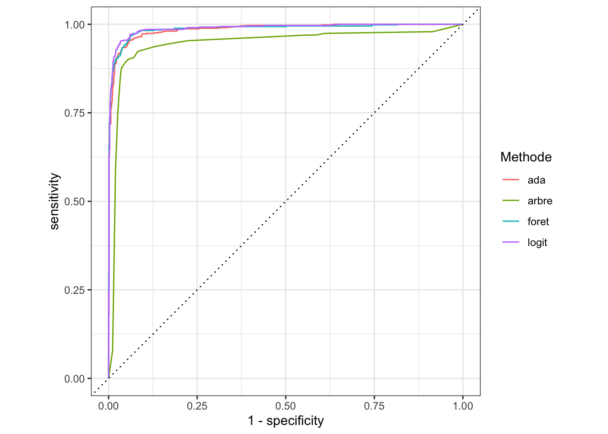
prob1 |> group_by(Methode) |> roc_auc(truth=obs,score,event_level="second") |> arrange(desc(.estimate))# A tibble: 4 × 4 Methode .metric .estimator .estimate <chr> <chr> <chr> <dbl> 1 logit roc_auc binary 0.989 2 foret roc_auc binary 0.987 3 ada roc_auc binary 0.986 4 arbre roc_auc binary 0.944prob1 |> mutate(class=recode(round(score), `0`="nonspam",`1`="spam")) |> group_by(Methode) |> summarize(err=mean(class!=obs)) |> arrange(err)# A tibble: 4 × 2 Methode err <chr> <dbl> 1 logit 0.0412 2 ada 0.0525 3 foret 0.0525 4 arbre 0.0750Comment aurait-on pu faire pour obtenir des résultats plus précis ?
Avec une validation croisée plutôt qu’un simple découpage apprentissage/test.
set.seed(1234) bloc <- sample(1:10,nrow(spam),replace=TRUE) table(bloc)bloc 1 2 3 4 5 6 7 8 9 10 438 455 449 439 496 471 442 472 470 469library(rpart) set.seed(5678) spam1 <- spam |> mutate(type=as.numeric(type)-1) score <- matrix(0,nrow=nrow(spam),ncol=4) |> as_tibble() names(score) <- c("arbre","ada","logit","foret") for (k in 1:10){ #print(k) ind.test <- bloc==k dapp <- spam1[!ind.test,] dtest <- spam1[ind.test,] dapp2 <- spam[!ind.test,] dtest2 <- spam[ind.test,] arbre <- rpart(type~.,data=dapp2,cp=1e-8,minsplit=2) cp_opt <- arbre$cptable |> as.data.frame() |> filter(xerror==min(xerror)) |> dplyr::select(CP) |> slice(1) |> as.numeric() arbre.opt <- prune(arbre,cp=cp_opt) ada <- gbm(type~.,data=dapp,distribution="adaboost", interaction.depth=3,bag.fraction=1, shrinkage = 0.05, cv.folds = 5,n.trees=500) nb_ada <- gbm.perf(ada,plot.it=FALSE) logit <- gbm(type~.,data=dapp,distribution="bernoulli", interaction.depth=3,bag.fraction=1, cv.folds = 5,n.trees=800) nb_logit <- gbm.perf(logit,plot.it=FALSE) foret <- ranger(type~.,data=dapp2,probability=TRUE) score[ind.test,] <- tibble(arbre=predict(arbre,newdata=dtest, type="prob")[,2], ada=predict(ada,newdata=dtest, n.trees=nb_ada, type="response"), logit=predict(logit,newdata=dtest, n.trees=nb_logit, type="response"), foret=predict(foret, data=dtest)$prediction[,2]) }score1 <- score |> mutate(obs=spam$type) |> pivot_longer(-obs,names_to="Methode",values_to="score") score1 |> group_by(Methode) |> roc_curve(truth=obs,score,event_level="second") |> autoplot()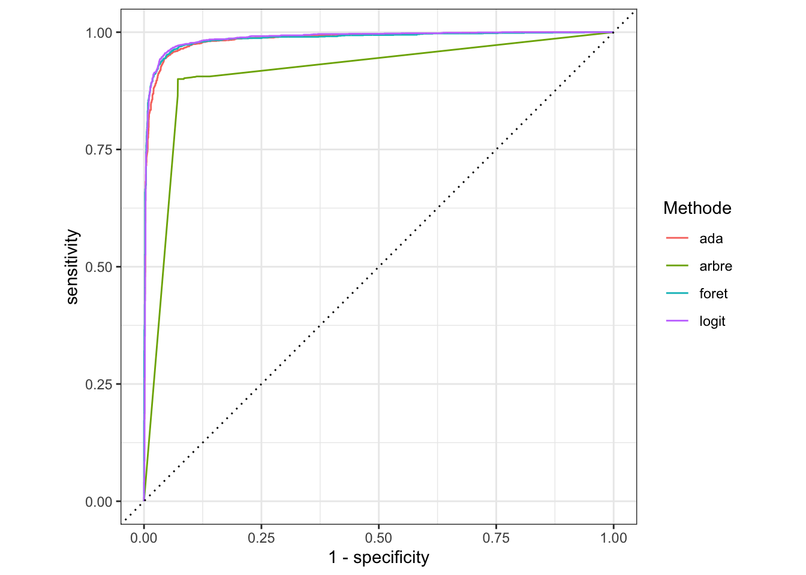
score1 |> group_by(Methode) |> roc_auc(truth=obs,score,event_level="second") |> arrange(desc(.estimate))# A tibble: 4 × 4 Methode .metric .estimator .estimate <chr> <chr> <chr> <dbl> 1 logit roc_auc binary 0.988 2 foret roc_auc binary 0.986 3 ada roc_auc binary 0.985 4 arbre roc_auc binary 0.912
3.4 Xgboost
L’algorithme xgboost Chen et Guestrin (2016) va plusloin que le gradient boosting en minimisant une approximation à l’odre 2 de la fonction de perte et en ajoutant un terme de régularisation dans la fonction objectif. On cherche toujours des combinaisons d’arbres
\[f_b(x)=f_{b-1}(x)+h_b(x)\quad\text{où}\quad h_b(x)=w_{q(x)}\]
est un arbre à \(T\) feuilles : \(w\in\mathbb R^T\) et \(q:\mathbb R^d\to\{1,2,\dots,T\}\). À l’étape \(b\), on cherche l’arbre qui minimise la fonction objectif de la forme
\[ \begin{aligned} \text{obj}^{(b)}= & \sum_{i=1}^n\ell(y_i,f_b(x_i))+\sum_{j=1}^b\Omega(h_j) \\ = & \sum_{i=1}^n\ell(y_i,f_{b-1}(x_i)+h_b(x_i))+\sum_{j=1}^b\Omega(h_j) \end{aligned} \]
où \(\Omega(h_j)\) est un terme de régularisation qui va pénaliser \(h_j\) en fonction de son nombre de feuilles \(T\) et des valeurs prédites \(w\). Un développement limité à l’ordre 2 permet d’approcher cette fonction par
\[\text{obj}^{(b)}=\sum_{i=1}^n[\ell_i^{(1)}h_b(x_i)+\frac{1}{2}\ell_i^{(2)}h_b^2(x_i)]+\Omega(h_b)+\text{constantes},\] avec
\[\ell_i^{(1)}=\frac{\partial \ell(y_i,f(x))}{\partial f(x)}(f_{b-1}(x_i))\quad\text{et}\quad \ell_i^{(2)}=\frac{\partial^2 \ell(y_i,f(x))}{\partial f(x)^2}(f_{b-1}(x_i)).\] Pour les arbres, la fonction de régularisation a la forme suivante :
\[\Omega(h)=\Omega(T,w)=\gamma T+\frac{1}{2}\lambda\sum_{j=1}^Tw_j^2,\] où \(\gamma\) et \(\lambda\) contrôlent le poids que l’on donne aux paramètres de l’arbre. On obtient au final l’algorithme suivant
Initialisation \(f_0=h_0\).
Pour \(b=1,\dots,B\)
Ajuster un arbre \(h_b\) à \(T\) feuilles qui minimise \[\sum_{i=1}^n[\ell_i^{(1)}h_b(x_i)+\frac{1}{2}\ell_i^{(2)}h_b^2(x_i)]+\gamma T+\frac{1}{2}\lambda\sum_{j=1}^Tw_j.\]
Mettre à jour \[f_b(x)=f_{b-1}(x)+h_b(x).\]
Sortie : la suite d’algorithmes \((f_b)_b\).
On pourra trouver plus de précisions ici : https://xgboost.readthedocs.io/en/stable/tutorials/index.html
Exercice 3.1 (Prise en main des principales fonction de xgboost) On commence par charger le package
library(xgboost)et on reprend les données sur le sinus de la Section 3.1 :
x <- seq(-2*pi,2*pi,by=0.01)
y <- sin(x)
set.seed(1234)
X <- runif(200,-2*pi,2*pi)
Y <- sin(X)+rnorm(200,sd=0.2)
df1 <- data.frame(X,Y)
df2 <- data.frame(X=x,Y=y)La fonction xgboost requiert que les données possèdent la classe xgb.DMatrix, on peut l’obtenir avec
X_mat <- xgb.DMatrix(as.matrix(df1[,1]),label=df1$Y)Expliquer la sortie
boost1 <- xgboost(data=X_mat,nrounds = 5, params=list(objective="reg:squarederror"))[1] train-rmse:0.633250 [2] train-rmse:0.468674 [3] train-rmse:0.354599 [4] train-rmse:0.275842 [5] train-rmse:0.224803boost1##### xgb.Booster raw: 16.5 Kb call: xgb.train(params = params, data = dtrain, nrounds = nrounds, watchlist = watchlist, verbose = verbose, print_every_n = print_every_n, early_stopping_rounds = early_stopping_rounds, maximize = maximize, save_period = save_period, save_name = save_name, xgb_model = xgb_model, callbacks = callbacks) params (as set within xgb.train): objective = "reg:squarederror", validate_parameters = "TRUE" xgb.attributes: niter callbacks: cb.print.evaluation(period = print_every_n) cb.evaluation.log() niter: 5 nfeatures : 1 evaluation_log: iter train_rmse 1 0.6332497 2 0.4686737 3 0.3545990 4 0.2758424 5 0.2248031On a ici entraîné
xgboostavec la fonction de perte quadratique et 5 itérations.Faire la même chose avec 100 itération et un
learning ratede 0.1.boost2 <- xgboost(data=X_mat,nrounds = 100, params=list(objective="reg:squarederror",eta=0.1), verbose = FALSE)On peut obtenir les valeurs prédites entre \(-2\pi\) et \(2\pi\) pour 100 itérations avec
Xtest <- as.matrix(df2$X) prev100 <- predict(boost2,newdata=Xtest,iterationrange = c(1,101))Tracer les estimateurs xgboost pour 1 itération, 20 itérations et 100 itérations. Commenter.
prev1 <- predict(boost2,newdata=Xtest,iterationrange=c(1,2)) prev20 <- predict(boost2,newdata=Xtest,iterationrange=c(1,21))tbl <- tibble(x=df2$X,vraie=df2$Y,b1=prev1,b20=prev20,b100=prev100) |> pivot_longer(-x,names_to = "fonc",values_to = "valeurs") ggplot(tbl)+aes(x=x,y=valeurs,color=fonc)+geom_line()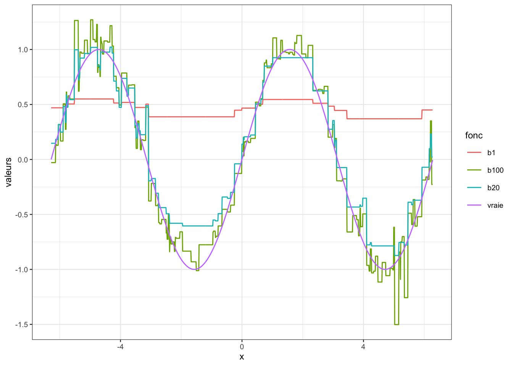
Comme pour le gradient boosting, l’algorithme sous-apprend si le nombre d’arbres est trop petit et sur-apprend lorsqu’il est trop grand.
Commenter la sortie
set.seed(123) sel.xgb <- xgb.cv(data = X_mat, nrounds = 100, objective = "reg:squarederror", eval_metric = "rmse", nfold=5,eta=0.1, early_stopping_rounds=10, verbose=FALSE) sel.xgb$evaluation_log |> head()iter train_rmse_mean train_rmse_std test_rmse_mean test_rmse_std 1: 1 0.7894653 0.012973111 0.7906004 0.05513590 2: 2 0.7189852 0.011889426 0.7228767 0.05364182 3: 3 0.6556685 0.010877136 0.6607388 0.05284791 4: 4 0.5985454 0.010104324 0.6055111 0.05240736 5: 5 0.5471973 0.009379501 0.5567722 0.05117564 6: 6 0.5007942 0.008971210 0.5129458 0.04971156(ite.opt.xgb <- sel.xgb$best_iteration)[1] 27sel.xgb$niter[1] 37On effectue une validation croisée 5 blocs pour choisir le nombre d’itérations. L’argument
early_stopping_rounds=10permet de stopper l’algorithme lorsque l’erreur de prévision commence à trop remonter.Tracer les prévisions pour l’algorithme sélectionné.
prev_opt <- predict(boost2,newdata=Xtest, iterationrange=c(1,ite.opt.xgb)) tbl <- tibble(x=df2$X,vraie=df2$Y,bopt=prev_opt) |> pivot_longer(-x,names_to = "fonc",values_to = "valeurs") ggplot(tbl)+aes(x=x,y=valeurs,color=fonc)+geom_line()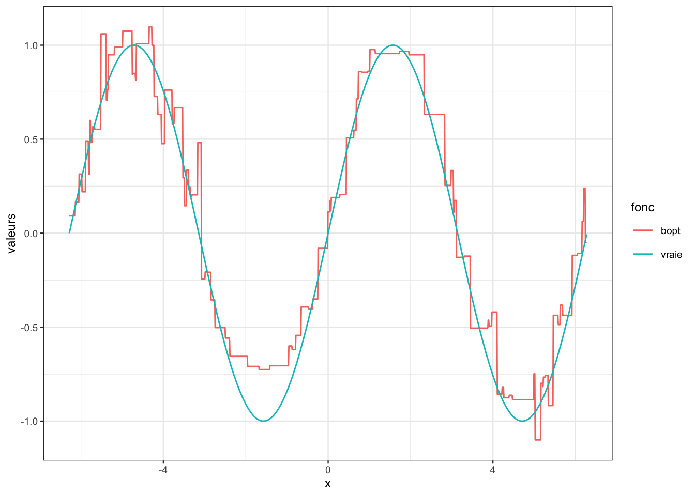
Exercice 3.2 (Xgboost sur les données spam) On reprend les données spam de la Section 3.2. Entraîner un algorithme xgboost avec la fonction de perte binary:logistic et en sélectionnant la nombre d’itérations par validation croisée en optimisant l’AUC. Attention cette fonction de perte requiert que la variable à expliquer prenne pour valeurs 0 ou 1 en classe numeric.
spam1 <- as_tibble(spam) |>
mutate(type=as.numeric(fct_recode(type,`1`="spam",`0`="nonspam"))-1)
X_mat <- xgb.DMatrix(as.matrix(spam1[,1:56]),label=spam1$type)On teste la fonction xgboost pour voir si les donées sont au bon format.
boost1 <- xgboost(data=X_mat,nrounds = 5,
params=list(objective="binary:logistic"))[1] train-logloss:0.499990
[2] train-logloss:0.387195
[3] train-logloss:0.318618
[4] train-logloss:0.262772
[5] train-logloss:0.224457 On peut maintenant faire la valisation croisée :
set.seed(123)
sel.xgb <- xgb.cv(data = X_mat,
nrounds = 500, objective = "binary:logistic",
eval_metric = "auc",
nfold=5,eta=0.1,
early_stopping_rounds=10,
prediction=TRUE,
verbose=FALSE)
(ite.opt.xgb <- sel.xgb$best_iteration)[1] 198sel.xgb$niter[1] 208sel.xgb$evaluation_log iter train_auc_mean train_auc_std test_auc_mean test_auc_std
1: 1 0.9500731 2.121192e-03 0.9306506 0.0034779143
2: 2 0.9564121 4.808012e-03 0.9425352 0.0035386497
3: 3 0.9621426 1.063738e-03 0.9493209 0.0035729044
4: 4 0.9641394 2.185222e-03 0.9528820 0.0039124835
5: 5 0.9677919 3.347806e-03 0.9577987 0.0064362485
---
204: 204 0.9995687 4.404906e-05 0.9884326 0.0009331813
205: 205 0.9995765 4.599862e-05 0.9884267 0.0009201703
206: 206 0.9995785 4.314789e-05 0.9884106 0.0009008832
207: 207 0.9995888 3.724468e-05 0.9884006 0.0009117750
208: 208 0.9995943 3.701767e-05 0.9883994 0.0009253329On récupère les prévisions issues de la validation croisée
score <- tibble(prev=sel.xgb$pred,obs=spam$type)pour tracer la courbe ROC et calculer l’AUC :
score |> roc_curve(truth=obs,prev,event_level="second") |>
autoplot()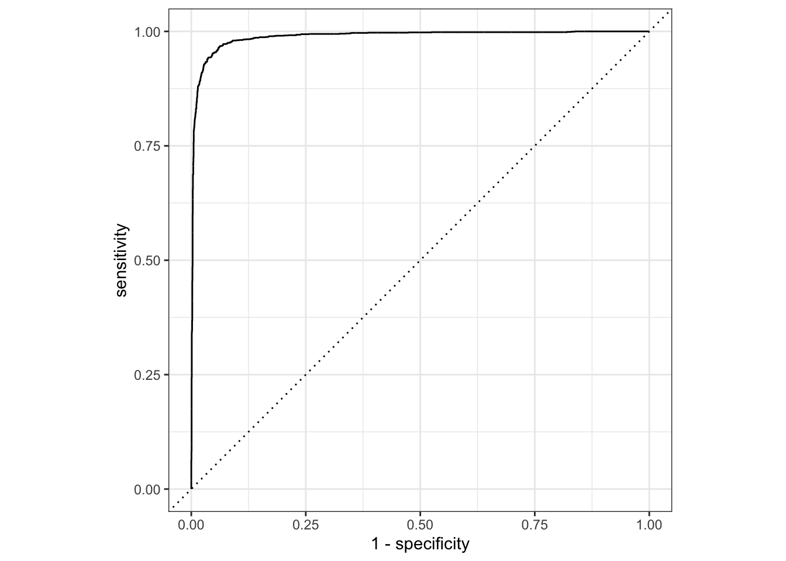
score |> roc_auc(truth=obs,prev,event_level="second")# A tibble: 1 × 3
.metric .estimator .estimate
<chr> <chr> <dbl>
1 roc_auc binary 0.988Exercice 3.3 (Sélection avec tidymodels) Refaire l’exercice précédent avec la syntaxe tidymodels. On choisira notamment :
la profondeur des arbres dans le vecteur
c(1,3,8,10)le nombre d’itérations entre 1 et 500 avec un
early_stoppingtoujours égal à 10 et un learning rate à 0.05.
On pourra consulter la page https://www.tidymodels.org/find/parsnip/ pour trouver les noms de paramètre du worfklow et sur le tutoriel https://juliasilge.com/blog/shelter-animals/ pour la stratégie. Elle est ici de fixer le nombre d’itérations à 500 puisqu’on utilise le early stopping en séparant les données en 2. On initialisera donc le workflow avec
library(tidymodels)
tune_spec <-
boost_tree(tree_depth=tune(),trees=500,learn_rate=0.05,
stop_iter=10) |>
set_mode("classification") |>
set_engine("xgboost",validation=0.2)
xgb_wf <- workflow() |>
add_model(tune_spec) |>
add_formula(type ~ .)On définit la grille de paramètres et le ré-échantillonnage :
set.seed(321)
grille <- expand.grid(tree_depth=c(1,3,8,10))
re_ech <- vfold_cv(spam,v=5)On fait la validation croisée :
xgb_tidy <- xgb_wf |>
tune_grid(
resamples = re_ech,
grid = grille,
metrics=metric_set(roc_auc))On visualise les résultats et on choisit la meilleure valeur :
xgb_tidy |> collect_metrics()# A tibble: 4 × 7
tree_depth .metric .estimator mean n std_err .config
<dbl> <chr> <chr> <dbl> <int> <dbl> <chr>
1 1 roc_auc binary 0.981 5 0.00144 Preprocessor1_Model1
2 3 roc_auc binary 0.988 5 0.000946 Preprocessor1_Model2
3 8 roc_auc binary 0.987 5 0.000569 Preprocessor1_Model3
4 10 roc_auc binary 0.988 5 0.000862 Preprocessor1_Model4(best_par <- xgb_tidy |> select_best())# A tibble: 1 × 2
tree_depth .config
<dbl> <chr>
1 10 Preprocessor1_Model4On finit en entraînant l’algorithme sur toute les données pur la valeur choisie :
final_xgb <-
xgb_wf |>
finalize_workflow(best_par) |>
fit(data=spam)On peut retrouver le nombre d’itérations sélectionnés par early stopping avec
mod_final <- final_xgb$fit$fit$fit
mod_final$best_iteration[1] 136On visualise enfin l’importance des variables avec
final_xgb |> extract_fit_parsnip() |>
vip(num_features = 15, geom = "point")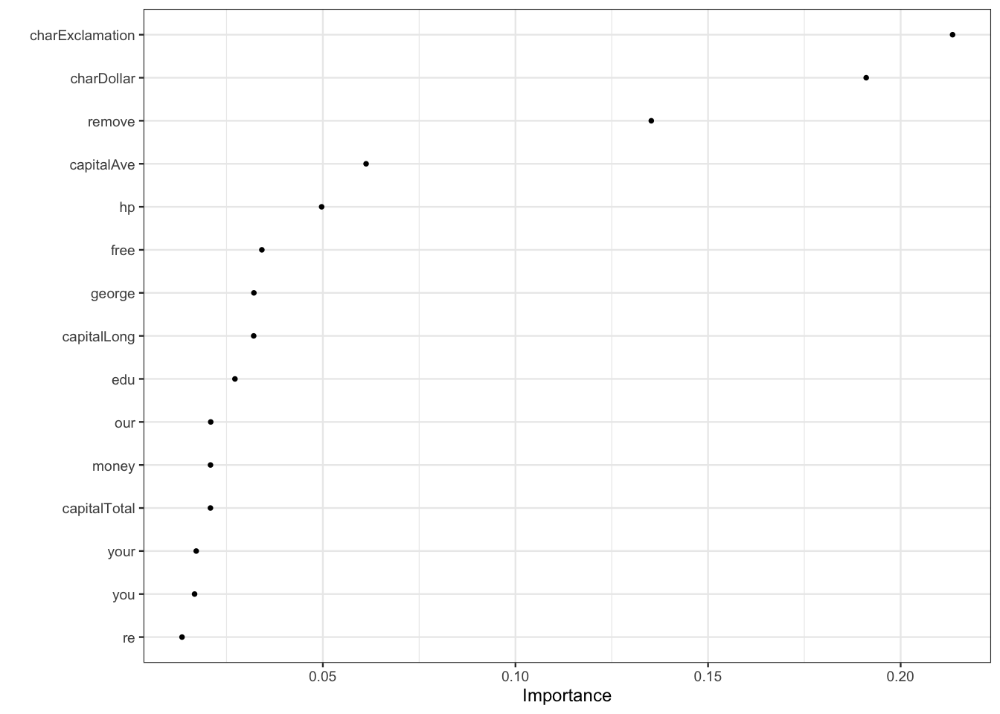